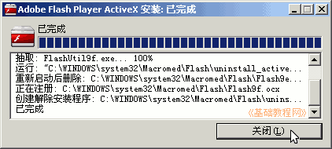
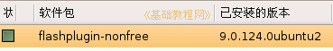
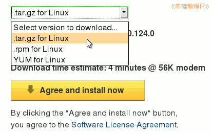

Firefox3 基础教程
作者：TeliuTe 来源：基础教程网
七、Flash插件 返回目录 下一课Flash动画在网页中非常普遍，安装相应的插件后，就可以正确播放网页中的Flash动画，
一般浏览器会自动检测页面，如果需要该插件，网页会自动下载，也可以自己手动安装；
1、下载和安装
1）Ｗindows版本比较简单，先下载安装包，然后运行安装包；
华军下载：http://www.newhua.com/soft/14967.htm
官方下载：http://www.adobe.com/go/getflashplayer；
2）下载成功以后，如果是压缩包文件先解压，得到一个安装程序，运行安装程序；
；
3）Ubuntu 系统的，新立得仓库里有flashplugin-nonfree 包，一般会有提示然后自动安装，

4）自己安装也可以到官方下载安装包，先选择文件包格式，然后点下载按钮，
官方下载：http://www.adobe.com/go/getflashplayer；
Select version to download...然后 Agree and install now ，下载以后根据包类型运行安装程序；

5）然后再打开Firefox，就可以正常观看网页中的动画了，
如果安装后仍然不能播放，检查一下是否安装了一些扩展，试着禁用一下；
本节学习了Flash插件的下载和安装基本操作，如果你成功地完成了练习，请继续学习下一课内容；本教程由86团学校TeliuTe制作|著作权所有
基础教程网：http://teliute.org
美丽的校园……
转载和引用本站内容，请保留版权信息和本站链接。